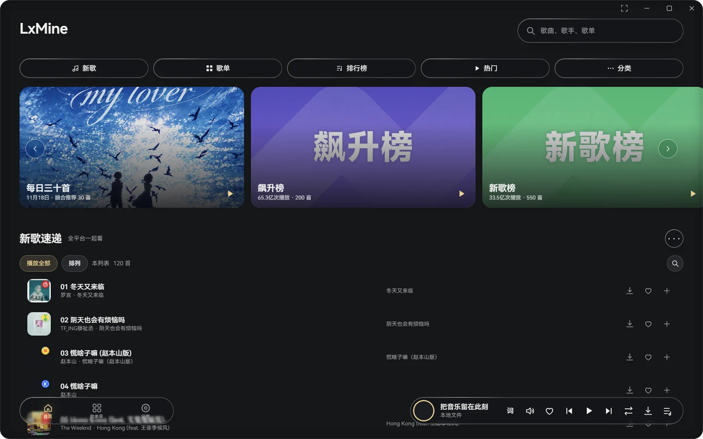
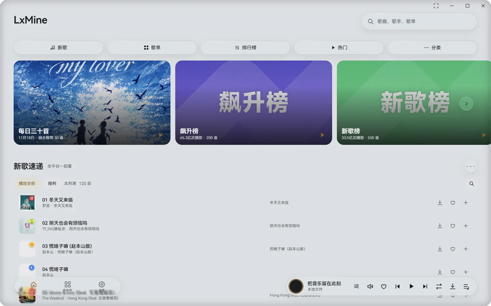
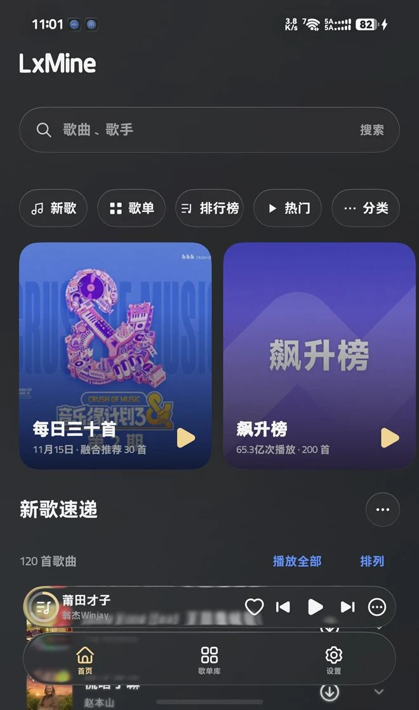

CROSS-PLATFORM CRAFT
不妥协于套壳网页，Windows、Android 与 HarmonyOS 各自贴合系统原生质感，同时共享同一套天蓝光感视觉与交互秩序。





PRINCIPLES
播放时自动对音源库全部候选并行探活，主动识别并跳过 30 秒试听片段与失效链接，毫秒级无感切至最佳完整音源。
内置流体、星环、音乐回响工坊等 3D 声场动效，按桌面与移动端自动分级渲染分辨率与帧率，兼顾视觉与流畅。
无需账号与云端托管，同一局域网内手机、平板与电脑自动发现，歌单、喜欢与音源脚本一键合并，数据只属于你自己。
内置 GitHub 与国内高速镜像双通道检测，Windows 与 Android 支持直接覆盖安装升级，HarmonyOS 支持一键跳转邀测或保存 HAP。